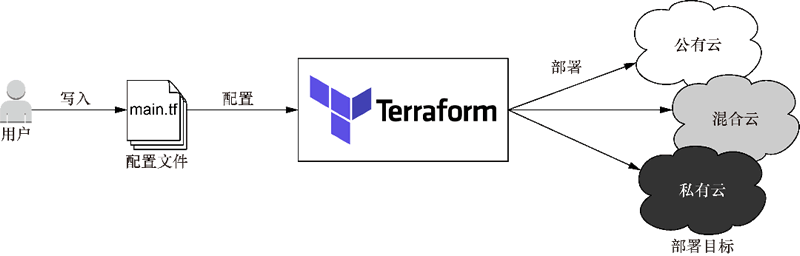
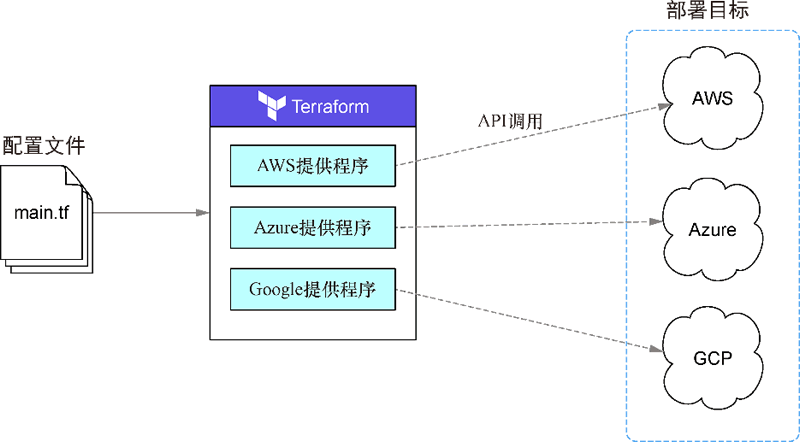

首页 > 编程笔记
Terraform介绍（非常详细)
Terraform 是一种部署技术，任何想要通过基础设施即代码（Infrastructure as Code，IaC）方法来置备和管理基础设施的人，都可以使用这种技术。
基础设施指的主要是基于云的基础设施，不过从技术上讲，任何能够通过应用程序编程接口（Application Programming Interface，API）进行控制的东西都可以算作基础设施。基础设施即代码是通过机器可读的定义文件来管理和置备基础设施的过程的。我们使用 IaC 来自动完成原本要由人手动完成的过程。
所谓置备，指的是基础设施部署，而不是配置管理，后者主要处理应用程序交付，特别是在虚拟机（Virtual Machine，VM）上交付。Ansible、Puppet、SaltStack 和 Chef 等配置管理（Configuration Management，CM）工具已经存在多年，非常流行。Terraform 并没有取代这些工具，至少不会完全取代，因为基础设施置备和配置管理在本质上是不同的问题。即使如此，Terraform 也会提供原本只有 CM 工具会提供的一些功能，许多公司在采用了 Terraform 之后，发现自己并不需要 CM 工具。
Terraform 的基本原则是，它允许编写人类可读的配置代码来定义 IaC。借助配置代码，你可以把可重复的、短暂的、一致的环境部署到公有云、私有云和混合云上的供应商（如图 1 所示）。
有 6 个关键特征让 Terraform 与众不同，给它带来了竞争优势：
下表将 Terraform 与其他 IaC 工具进行了对比。
从技术上讲，Pulumi 最接近 Terraform，唯一的区别在于它不是声明式的。Pulumi 团队认为这是 Pulumi 相较于 Terraform 的优势，但 Terraform 也有一个云开发工具包（Cloud Development Kit，CDK），允许实现相同的功能。
Terraform 的设计受到了 AWS CloudFormation 的启发，并且与 GCP Deployment Manager 和 Azure Resource Manager 有很相近的地方。那些技术虽然也不错，但都不是与具体云无关的技术，也都不是开源的。它们只能用于特定的云供应商，并且一般不如 Terraform 简洁和灵活。
Ansible、Chef、Puppet 和 SaltStack 都是配置管理工具，而不是基础设施置备工具。它们解决的问题类别与 Terraform 有些区别，不过也存在重叠的地方。
配置管理工具和置备工具之间的区别主要在于理念。配置管理工具常用于管理可变基础设施，而 Terraform 和其他置备工具常用于管理不可变基础设施。
可变基础设施意味着在现有服务器上执行软件更新。不可变基础设施则不关心现有服务器，它把基础设施视为用后即可丢弃的商品。这两种范式之间的区别可归结为复用思想与用后丢弃思想的区别。
Terraform 之所以如此易用，主要原因在于其代码是用一种称作 HashiCorp Configuration Language（HCL）的领域特定的配置语言编写的。
HashiCorp 开发了这种语言，用来替代更加冗长的 JSON 和 XML 等配置语言。HCL 试图在人类可读性和机器可读性之间达到一种平衡，并受到了这个领域中一些早期尝试（如 libucl 和 Nginx 配置）的影响。HCL 与 JSON 完全兼容，这意味着 HCL 能够完全转换为 JSON，反之亦然。这就使得与 Terraform 之外的系统进行互操作或者动态生成配置代码变得十分简单。
Terraform 没有提供高级版本，但提供了商业解决方案和企业解决方案（Terraform Cloud 和 Terraform Enterprise），可成规模运行 Terraform。
声明式编程语言是与命令式（或过程式）编程相对的。命令式语言使用条件分支、循环和表达式来控制系统流程、保存状态和执行命令。几乎所有传统编程语言（如 Python、Java、C 等）都是命令式编程语言。
注意，声明式编程关注的是结果，而不是过程。命令式编程关注的是过程，而不是结果。
Terraform 是云无关的，使用 Terraform 把基础设施部署到 AWS 与部署到 GCP、Azure 甚至私有数据中心一样简单（如下图所示）。云无关很重要，因为这意味着你不会被局限于特定的云供应商，也不需要在每次改变云供应商时学习一种全新的技术。
Terraform 通过提供程序（provider）与不同的云集成。提供程序是 Terraform 插件，用于与外部 API 进行交互。每个云供应商都会维护自己的 Terraform 提供程序，使 Terraform 能够管理该云中的资源。
提供程序是使用 Go 语言编写的，并作为二进制文件分发到Terraform注册表上。它们负责进行身份验证、发出API请求以及处理超时和错误。在这个注册表中，有数百个已经发布的提供程序，它们协同起来，使你能够管理数千种不同的资源。
基础设施指的主要是基于云的基础设施，不过从技术上讲，任何能够通过应用程序编程接口（Application Programming Interface，API）进行控制的东西都可以算作基础设施。基础设施即代码是通过机器可读的定义文件来管理和置备基础设施的过程的。我们使用 IaC 来自动完成原本要由人手动完成的过程。
所谓置备，指的是基础设施部署，而不是配置管理，后者主要处理应用程序交付，特别是在虚拟机（Virtual Machine，VM）上交付。Ansible、Puppet、SaltStack 和 Chef 等配置管理（Configuration Management，CM）工具已经存在多年，非常流行。Terraform 并没有取代这些工具，至少不会完全取代，因为基础设施置备和配置管理在本质上是不同的问题。即使如此，Terraform 也会提供原本只有 CM 工具会提供的一些功能，许多公司在采用了 Terraform 之后，发现自己并不需要 CM 工具。
Terraform 的基本原则是，它允许编写人类可读的配置代码来定义 IaC。借助配置代码，你可以把可重复的、短暂的、一致的环境部署到公有云、私有云和混合云上的供应商（如图 1 所示）。

图 1 Terraform可以把基础设施部署到任何云或者混合云中
图 1 Terraform可以把基础设施部署到任何云或者混合云中
Terraform的优点
Terraform 并不是唯一的 IaC 技术，还有其他许多工具也能完成同样的工作。软件部署是利润颇丰的市场领域，Terraform 为什么能够在这个领域与 Amazon、Microsoft 和 Google 等公司的技术竞争呢？有 6 个关键特征让 Terraform 与众不同，给它带来了竞争优势：
- 置备工具：部署基础设施，而不只是应用程序。
- 易于使用：适合我们这些不是天才的人使用。
- 免费且开源：谁不喜欢免费的东西呢？
- 声明式：说出你想要的结果，而不是说出如何实现这个结果。
- 云无关：使用相同的工具部署到任意云。
- 表达能力强且可扩展：不受语言的限制。
下表将 Terraform 与其他 IaC 工具进行了对比。
| 名称 | 关键待征 | |||||
|---|---|---|---|---|---|---|
| 置备工具 | 易于使用 | 免费、开源 | 声明式 | 云无关 | 表达能力强、可扩展 | |
| Ansible | √ | X | X | √ | X | X |
| Chef | √ | √ | X | X | X | X |
| Puppet | √ | √ | X | X | X | X |
| Saltstack | √ | X | X | X | X | X |
| Terraform | X | X | X | X | X | X |
| Pulumi | X | √ | X | √ | X | X |
| AWS CloudFormation | X | X | √ | X | √ | √ |
| GCP Deployment Manager | X | X | √ | X | √ | √ |
| Azure Resource Manager | X | √ | √ | √ | √ |
√
|
从技术上讲，Pulumi 最接近 Terraform，唯一的区别在于它不是声明式的。Pulumi 团队认为这是 Pulumi 相较于 Terraform 的优势，但 Terraform 也有一个云开发工具包（Cloud Development Kit，CDK），允许实现相同的功能。
Terraform 的设计受到了 AWS CloudFormation 的启发，并且与 GCP Deployment Manager 和 Azure Resource Manager 有很相近的地方。那些技术虽然也不错，但都不是与具体云无关的技术，也都不是开源的。它们只能用于特定的云供应商，并且一般不如 Terraform 简洁和灵活。
Ansible、Chef、Puppet 和 SaltStack 都是配置管理工具，而不是基础设施置备工具。它们解决的问题类别与 Terraform 有些区别，不过也存在重叠的地方。
置备工具
Terraform 是一种基础设施置备工具，而不是配置管理工具。置备工具部署和管理基础设施，而配置管理工具（如Ansible、Puppet、SaltStack和Chef）将软件部署到现有服务器上。一些配置管理工具也能够执行一定程度的基础设施置备，但不如 Terraform，因为它们并不是为这类任务设计的。配置管理工具和置备工具之间的区别主要在于理念。配置管理工具常用于管理可变基础设施，而 Terraform 和其他置备工具常用于管理不可变基础设施。
可变基础设施意味着在现有服务器上执行软件更新。不可变基础设施则不关心现有服务器，它把基础设施视为用后即可丢弃的商品。这两种范式之间的区别可归结为复用思想与用后丢弃思想的区别。
易于使用
即使是非程序员，也可以快速、轻松地学会 Terraform 的基础知识。当然，要精通 Terraform 就是另外一回事了，不过对于大部分技能都是如此。Terraform 之所以如此易用，主要原因在于其代码是用一种称作 HashiCorp Configuration Language（HCL）的领域特定的配置语言编写的。
HashiCorp 开发了这种语言，用来替代更加冗长的 JSON 和 XML 等配置语言。HCL 试图在人类可读性和机器可读性之间达到一种平衡，并受到了这个领域中一些早期尝试（如 libucl 和 Nginx 配置）的影响。HCL 与 JSON 完全兼容，这意味着 HCL 能够完全转换为 JSON，反之亦然。这就使得与 Terraform 之外的系统进行互操作或者动态生成配置代码变得十分简单。
免费且开源的软件
Terraform 的引擎称作 Terraform core，这是一款免费且开源的软件，通过 Mozilla Public License v2.0 提供。该许可规定，任何人都可以出于个人目的和商业目的使用、分发或修改软件。免费这一点很好，因为这意味着你在使用 Terraform 时不必担心会承担额外的费用。另外，它使得产品及其工作方式对用户来说变得透明。Terraform 没有提供高级版本，但提供了商业解决方案和企业解决方案（Terraform Cloud 和 Terraform Enterprise），可成规模运行 Terraform。
声明式编程
声明式编程指的是表达计算逻辑（做什么），但不描述控制流（怎么做）。你不必编写一步步执行的指令，只要描述自己想要的结果即可。数据库查询语言（SQL）、函数式编程语言（Haskell、Clojure）、配置语言（XML、JSON）和大部分 IaC 工具（Ansible、Chef、Puppet）都是声明式编程语言的示例。声明式编程语言是与命令式（或过程式）编程相对的。命令式语言使用条件分支、循环和表达式来控制系统流程、保存状态和执行命令。几乎所有传统编程语言（如 Python、Java、C 等）都是命令式编程语言。
注意，声明式编程关注的是结果，而不是过程。命令式编程关注的是过程，而不是结果。
云无关
云无关指的是能够使用一组相同的工具和工作流，无缝运行在任意云平台上。Terraform 是云无关的，使用 Terraform 把基础设施部署到 AWS 与部署到 GCP、Azure 甚至私有数据中心一样简单（如下图所示）。云无关很重要，因为这意味着你不会被局限于特定的云供应商，也不需要在每次改变云供应商时学习一种全新的技术。

图 2 使用Terraform同时部署到多个云
图 2 使用Terraform同时部署到多个云
Terraform 通过提供程序（provider）与不同的云集成。提供程序是 Terraform 插件，用于与外部 API 进行交互。每个云供应商都会维护自己的 Terraform 提供程序，使 Terraform 能够管理该云中的资源。
提供程序是使用 Go 语言编写的，并作为二进制文件分发到Terraform注册表上。它们负责进行身份验证、发出API请求以及处理超时和错误。在这个注册表中，有数百个已经发布的提供程序，它们协同起来，使你能够管理数千种不同的资源。
表达能力强且高度可扩展
与其他声明式 IaC 工具相比，Terraform 的表达能力强，且高度可扩展。通过使用条件语句、for表达式、指令、模板文件、动态块、变量和许多内置函数，我们可以轻松地编写代码来实现自己的目的。下表从技术的角度对比了 Terraform 和 AWS CloudFormation（催生 Terraform 的技术）。| 名称 | 语言特定 | 其它特性 | |||||
|---|---|---|---|---|---|---|---|
| 本身提供的函数 | 条件语句 | for循环 | 类型 | 支持插件 | 模块化 | 等待条件 | |
| Terraform | 115个 | 是 | 是 | 字符串、数字、列表、 映射、布尔值、对象、复杂类型 | 是 | 是 | 否 |
| AWS CloudFormation | 11个 | 是 | 否 | 字符串、数字、列表 | 有限程度 | 是 | 是 |
关注公众号「站长严长生」，在手机上阅读所有教程，随时随地都能学习。内含一款搜索神器，免费下载全网书籍和视频。

微信扫码关注公众号